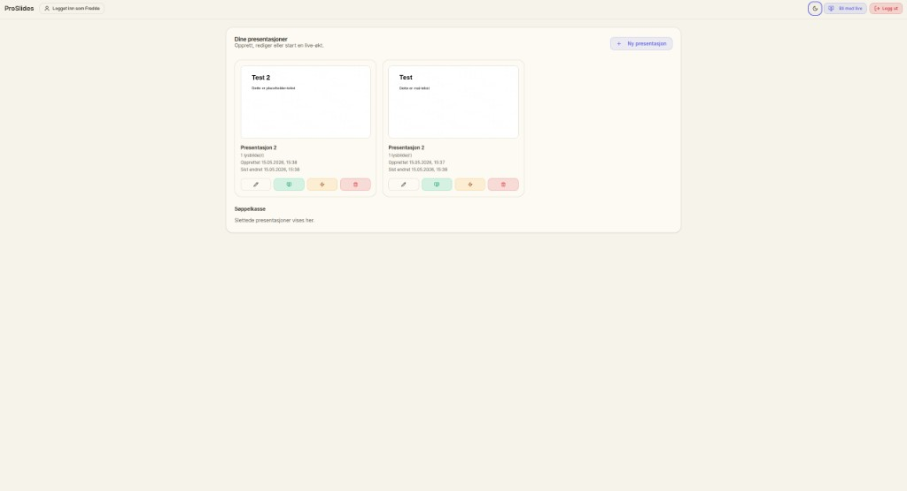
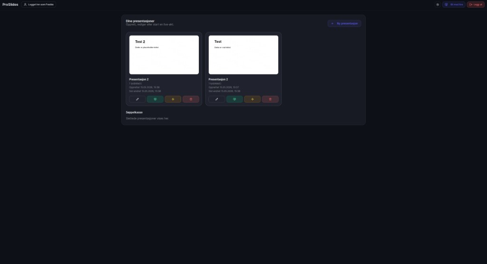
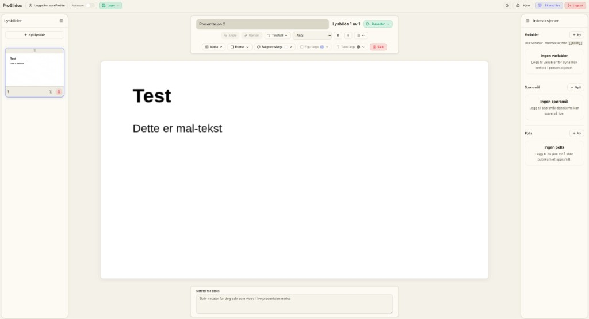
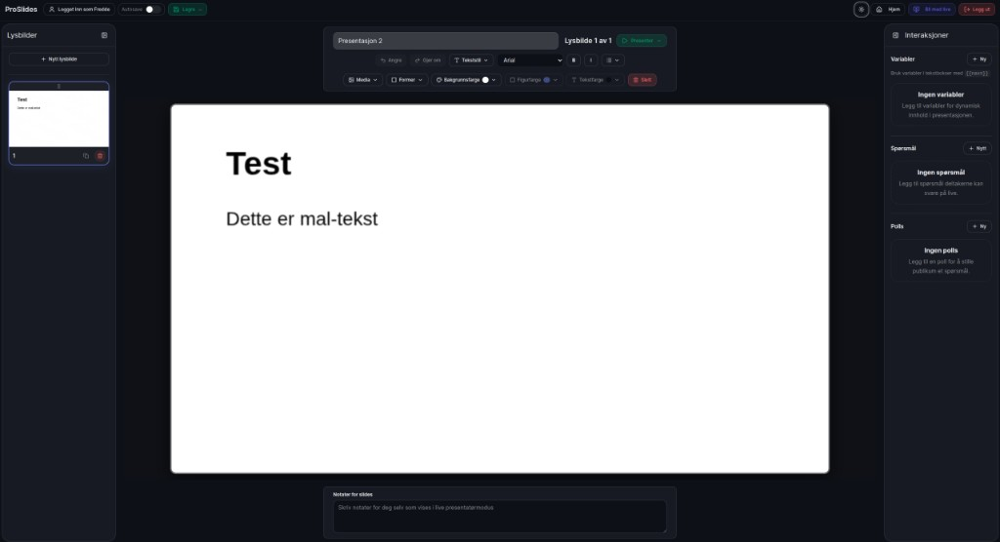
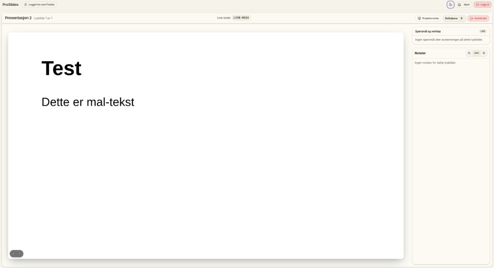
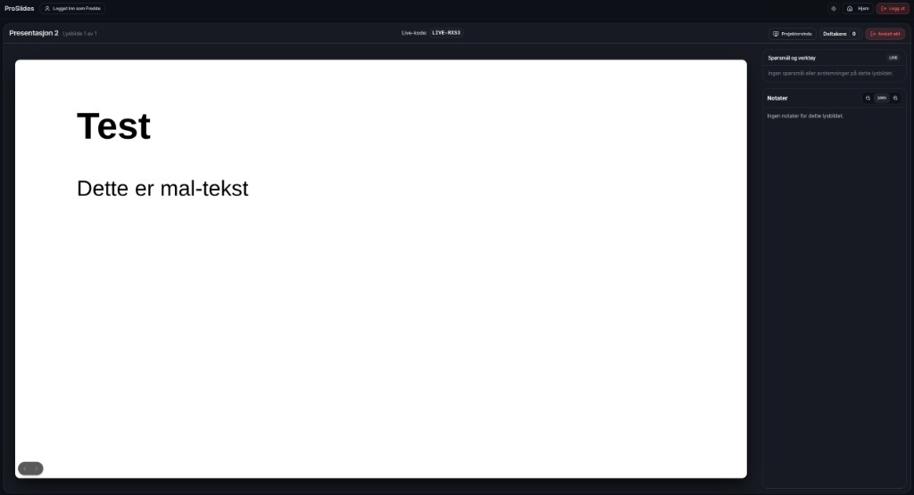

Martin M. Hansen
Prosjektleder · Utvikler
Live-funksjonalitet og databasearkitektur
Primærfokus
- Sanntidskommunikasjon (Action Cable)
- Datamodell (PostgreSQL / Neon)
- Resultattavle (live)
En webbasert WYSIWYG-presentasjonseditor med sanntids publikumsinvolvering – polls, publikumsspørsmål og live-resultater. Bygget som bachelorprosjekt (BOP3000) ved USN Bø, våren 2026.
Dashboard · Editor · Live-presentasjon






RubyNor har i dag løsningen spleiselaget.no for interaktive presentasjoner, men den er bygget på rigide, forhåndsdefinerte maler. Oppgaven var å utvikle en mer fleksibel WYSIWYG-editor der brukeren fritt kan utforme slides visuelt, samtidig som publikum involveres i sanntid via nettleser eller mobil – uten behov for apper eller brukerkonto.
Problemstilling
«Hvordan kan vi utvikle et webbasert presentasjonsverktøy som både gir brukeren full frihet til å utforme slides visuelt og samtidig legger til rette for aktiv publikumsinvolvering under presentasjonen?»
Oppdragsgiver
RubyNor – Pål Andrè Sundt, CTO
Veileder
Ingrid Sundbø – USN, campus Bø
Prosjektet er organisert som en monorepo med to hovedmapper:
Elm ble anbefalt som frontend – vi valgte React/TypeScript for økosystem, erfaring og industrirelevans.
TypeScript-dominert frontend mot et Ruby on Rails API – med PostgreSQL, Redis og container-deploy.
SPA, editor og styling
API, sanntid og auth
Lagring, cache og produksjon
Tredelt webarkitektur med SPA, REST API og sanntidskanal.
React + TypeScript med Vite. Komponentbasert arkitektur med shadcn/ui og Fabric.js canvas-editor. Tokenbasert auth og reaktiv state.
Ruby on Rails 8.1 i API-modus. Versjonert REST-API, JWT-autentisering, OAuth (Google/GitHub), og Action Cable for WebSocket-sanntid.
PostgreSQL via Neon. UUID-primærnøkler, JSONB for fleksible slide-elementer, og relasjonell struktur for brukere, presentasjoner og sessions.
Klikk på elementer for forklaring. Dra med musen for å panorere, scroll eller knappene for å zoome.
Bachelor_Gruppe1 / monorepo
Klikk på en mappe for å folde ut – klikk på filer for detaljer i panelet til høyre.
Monorepo-rot (fra README)
Bachelor_Gruppe1/ ├── backend/ Rails 8.1 API · Action Cable · DB ├── frontend/ Vite + React SPA (editor + live) ├── scripts/kamal.ps1 Windows-helper for Kamal deploy └── README.md
https://slides.rubynor.com
Utviklerteamet bak ProSlides – bachelorprosjekt USN våren 2026, i samarbeid med RubyNor.
Prosjektleder · Utvikler
Live-funksjonalitet og databasearkitektur
Primærfokus

Scrum Master · Utvikler
Presentasjonseditor, frontend-arkitektur og Scrum
Primærfokus

Utvikler · UI/UX · Sikkerhet
Autentisering, UI & UX-design og testing (Playwright E2E)
Primærfokus

Utvikler
Backend API og forretningslogikk
Primærfokus

Utvikler
Interaktive elementer
Primærfokus
Prosjektet er delt opp i fire sprinter, tilpasset tidsrammen.
Sette i gang med prosjektet. Oppsett av IDE, rammeverk og utviklingsmiljø. Sette seg inn i Ruby og Rails.
Etablere fast UI-struktur. Sikre interaktiv og intuitiv UX med universell utforming. Definere datastrukturer og modeller.
Editoren er kjernen i prosjektet. All funksjonalitet på plass: verktøylinje, polls, publikumsspørsmål, slides og sanntidsvisning.
Brukertesting av nettsiden, brukerhistorier og selvtesting. Feil og mangler fikses fortløpende.
Gjøres gjennom hele prosjektets levetid, parallelt med utvikling. Dokumenterer prosess, metode, resultater og refleksjon.
Siste optimalisering, feilretting og endringer. Levering av ferdig produkt, rapport og prosjektoversikt.
Oversikt over dokumenter, lenker og media knyttet til prosjektet.
Legg til nye poster i js/docs.js — støtter filer, eksterne lenker og bilder.
Ingen ressurser lagt til ennå.
Merknad · Cursor AI
Denne prosjektoversikten (denne nettsiden, ikke ProSlides-appen): UI, layout, kode og animasjoner er utviklet med Cursor AI.
Innholdet er ikke AI-generert.
Tekst, data og prosjektinformasjon er skrevet og verifisert av gruppen.
Modeller: Claude Opus 4.6,
Claude Opus 4.7,
Cursor Composer .